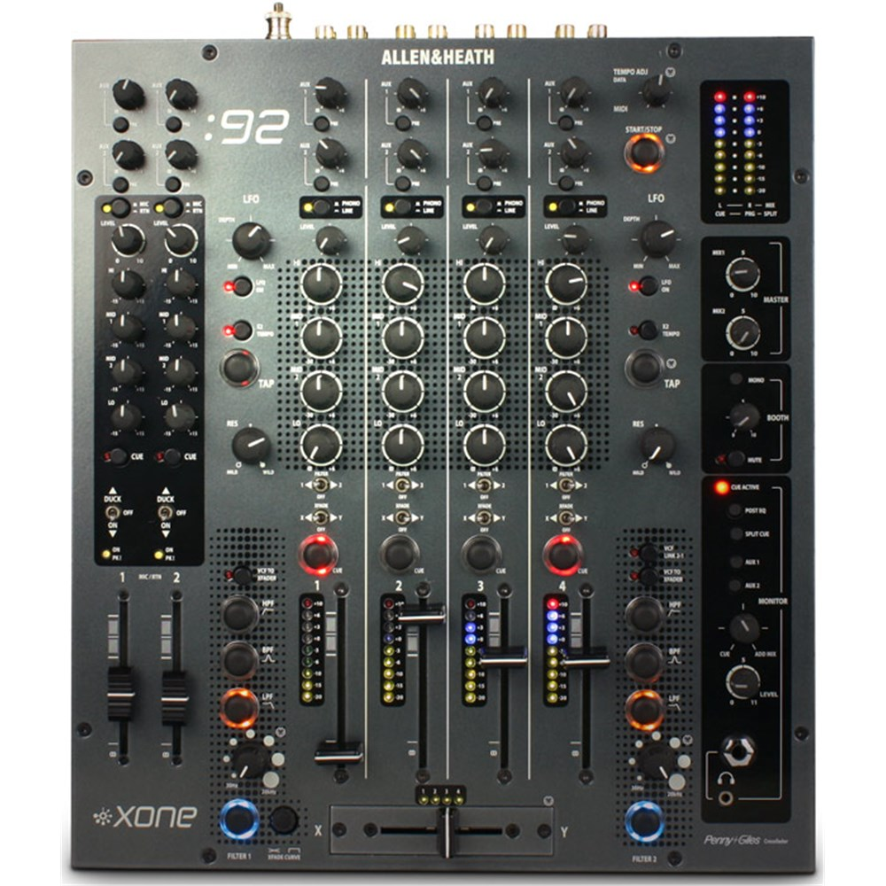

DJ Equipment
Pioneer
Pioneer is the leading DJ brand for equipment and has been proven to be the most reliable in all types of scenarios.
Anywhere in the world you go for DJ festivals you can be almost certain they will be using Pioneer based equipment.
Pioneer has created multiple types of DJ controllers, turntables, mixers, CDJs and even software.
CDJs
CDJs are now these much more frequently used ahead of turntables, CDJs are essentially what the music is played from,
and as you might have noticed DJs are often provided with at least 2 CDJs, with most big music festivals supplying them with 4 CDJs.
These pieces of equipment are used to switch between songs so there is no stop in between playing as well as beatmatching songs together to help them blend.
Mixers
A DJ will only ever need 1 mixer as the centre piece of his set up with a CDJ either side of the mixer, its job is help mix beats from the CDJs
together as well as cross fading between each CDJ to keep the music playing without that stop start feel for listeners. It contains multiple knobs
to dictate frequencies and what is known as an EQs section to add effects and background sounds to the music, as well as faders to change tempo and songs.

Software
Software often depends on the specific hardware equipment as well as what is provided to be played with. Most DJs must be able to adapt
when it comes to software as there are multiple types of software used and not all are compatible on certain hardware. The main softwares are
Rekordbox, Serato and Traktor, with Ableton used as the software for DJs to create their own original sounds.
Assentials
Headphones, USB sticks and a Laptop are all small but yet important pieces of equipment needed to DJ. Headphones are used to prepare the next song
and make sure it matches the bpm and mixes well with the current song playing. USB sticks hold the DJs personal songs and playlists,
without them their is no music. A Laptop might not always need to be used as CDJs have a built in software but the option is there if needed